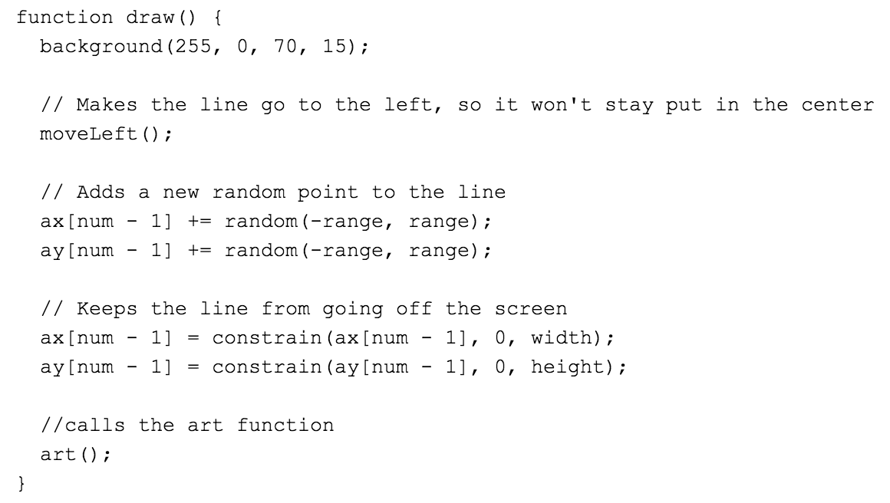

My program is written in JavaScript with p5.js in my library. My code was created using the Glitch development environment. The zigzag and ellipse animations are a p5.js generative art project that executes when the HTML pages loads the JavaScript program. The purpose of my program is to make generative art, art that is made by a computer. The zigzag line fades and changes the thickness while there is circles in the background spawning in different positions in different sizes as demonstrated by the video clip. In the video clip, you can see many circles that are different sizes with different positions throughout the screen and fading back.
My partner and I used iterative pair programming by sharing ideas about types of art pieces that we both liked. The first developmental challenge I encountered was making my zigzag line fade. I solved this challenge by giving the background a fourth parameter which was the alpha parameter that giving it an opacity. The second developmental challenge I encountered was to spawn many ellipses with different sizes and positions. I solved this challenge by making four different variables and inputting them in the parameters for the ellipse. By myself, I was able to add the random ellipses in the background and making them fade. My partner and I overcame a challenge by talking though the code like if it was English to better understand how it works and what we needed to do to make it do what we wanted.
 The purpose of this main section of code is to keep drawing random ellipses in the background and to keep the zigzag look like it’s moving. When this for loop runs correctly, the code will keep adding a new point connecting it to the previous points to make it look like it’s moving. Then it will add random ellipses in the background of different sizes and locations. The algorithm is able to achieve this result by repeating the for loop, which is endless so it will always have a similar effect. This decreases my program’s complexity by separating the art function from the rest of the program. If this program did not include this algorithm, it would just generate a red background with no effects. This algorithm works with two other other sub algorithms to do the math part in the movement of the zigzag. My first math algorithm moves the zigzag line so it looks likes it’s moving, it does this by adding a new random point with the given range to draw the zigzag. My second math algorithm keeps the zigzag line inside the screen by putting boundaries around the borders.
An example of an abstraction in my program is the for loop inside the art() function. This simplifies my program by adding new ellipses, which means i don’t have to add a different ellipse every single time. I created this for loop to avoid repeating the creation of ellipses in the background. If this abstraction weren’t present, then it would not look like an animation. Since, the for loop keeps creating new ellipses, it looks like ellipses are popping up and then fading away, without it they would just appear and there would be no animation. The moveLeft() function is another abstraction because it does not add onto the draw function, making it easier to read the code. If this function was not present, the zigzag would not move, instead it would just expand to random places.